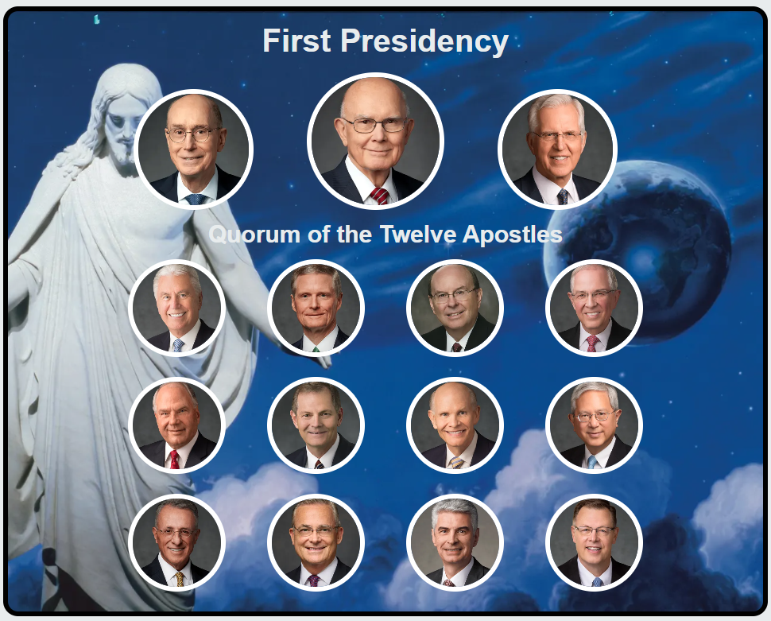
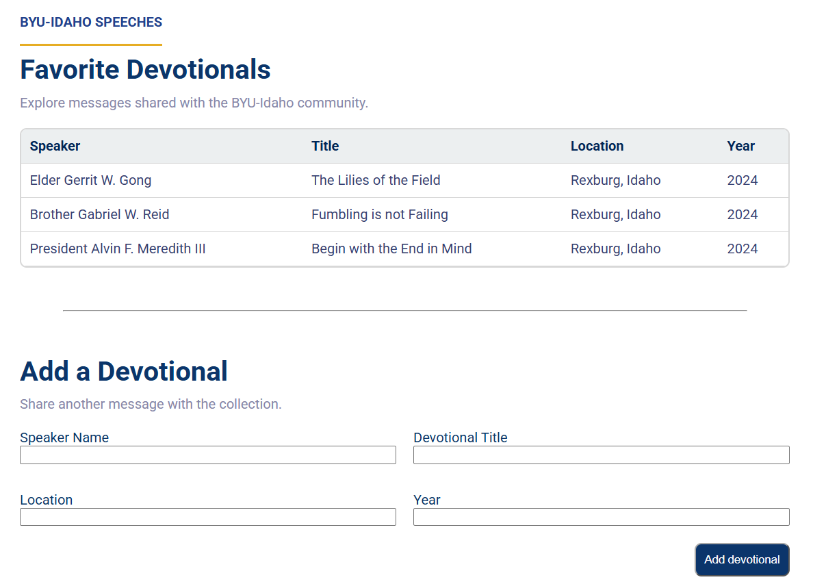
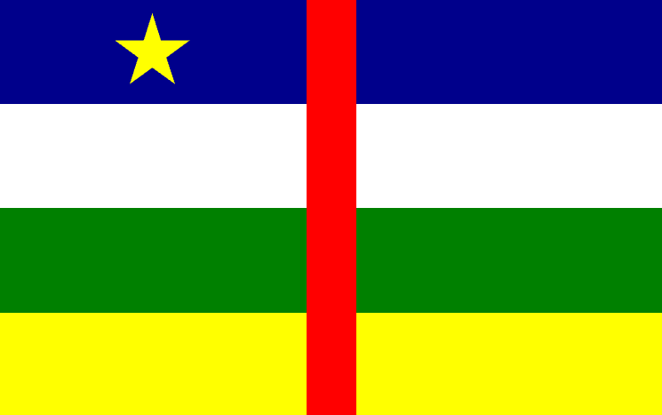
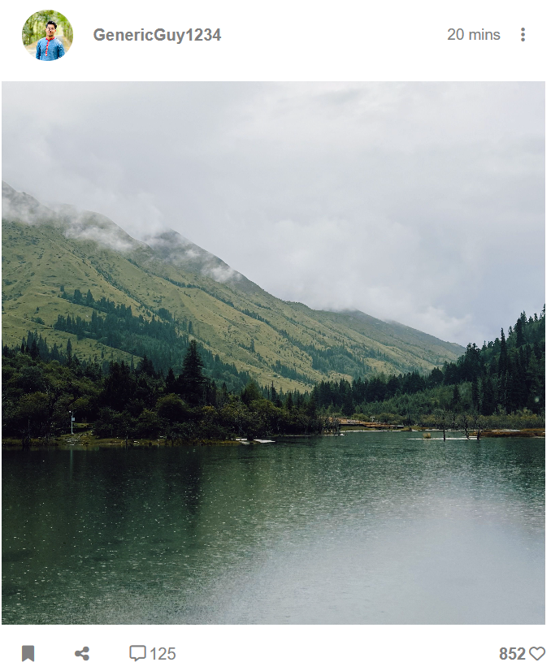
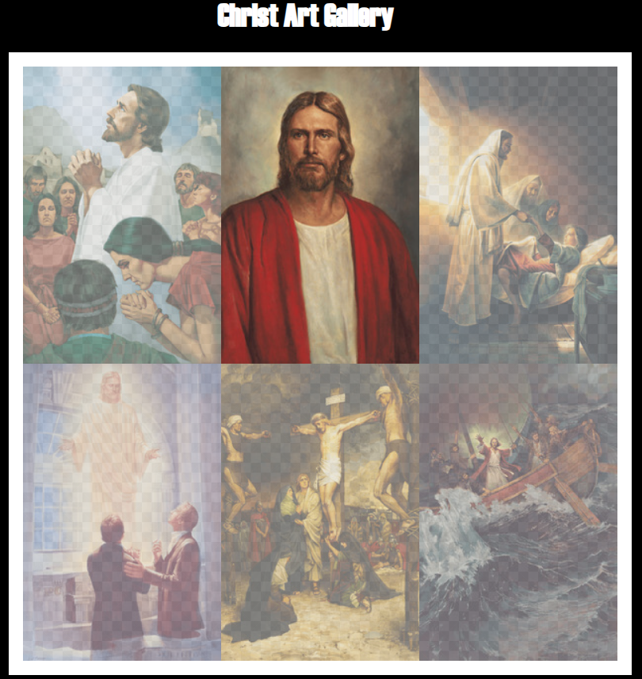
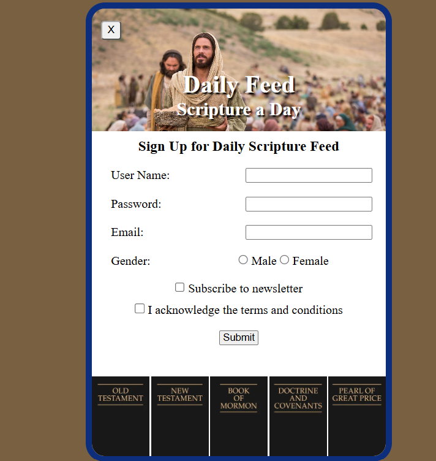

Prophet Cards
This ICE challenge taught multiple things, including fonts, images, and basic page layout. It was a good introductory challenge that helped me to learn a lot of different basic HTML/CSS skills.

Apostle Spotlight
This ICE challenge taught about grids, and how you can use them to create complex page layouts and make your page look visually appealing.

Favorite Devotional
This ICE challenge taught about forms, tables, and horizontal rules, as well as how to format each of them.

Holiday Page
This ICE challenge taught about how to format a page without touching the HTML and only changing the CSS, as well as how to rotate elements.

Country Flags
This ICE challenge taught about how to use grids in the form of recreating various flags, which gave me a deeper understanding of how to use grids.

CSS Positioning
This ICE challenge taught about how to use icons through FontAwesome and how to position elements on a page.

Image Gallery
This ICE challenge taught about how to compress and resize images to help the page run faster.

Signup Form
This ICE challenge taught about how to create and style a signup form with HTML and CSS.
